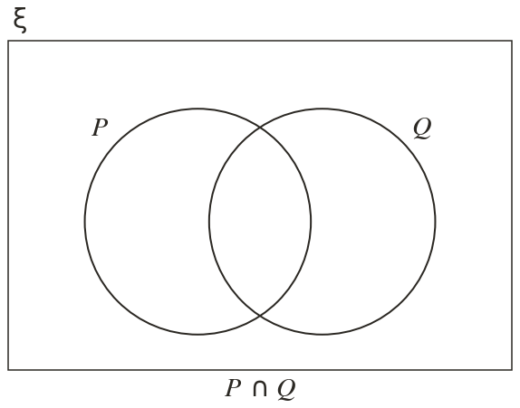
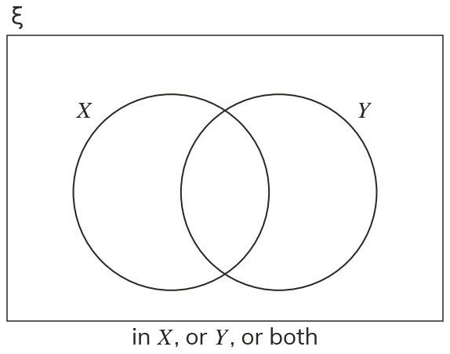
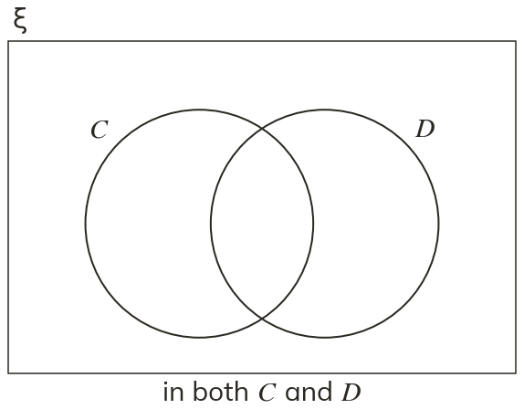
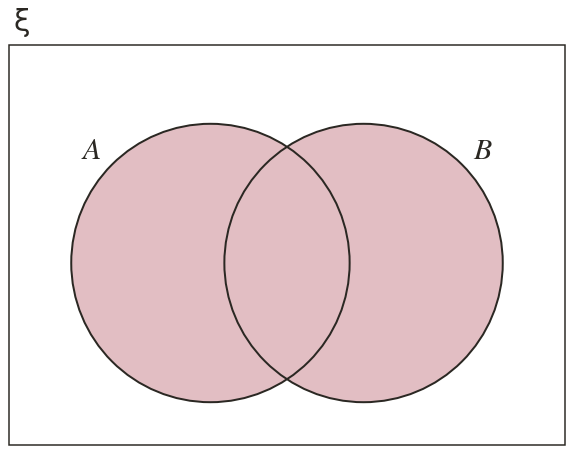
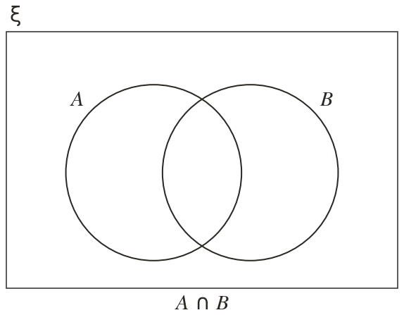
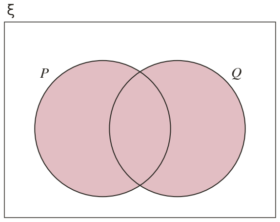
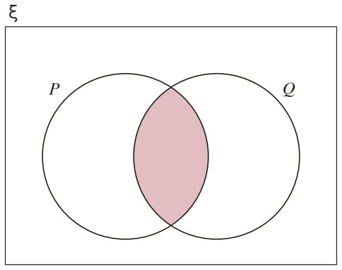

Westonbirt Maths · Probability and Sets
Venn Diagrams
Name: ______________________ Date: ____________
1
Shade ∪
2
Shade ∩
3
Shade the region for "in X, or in Y, or in both". Write it in set notation.
4
Shade the region for "in both C and D". Write it in set notation.
5
Is the shaded region ∪ or ∩ ?
Ext
and ∪
Find ∩ and shade ∩
Find ∩ and shade ∩






